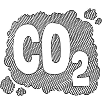

Data Source: Climate Central and World Meteorological Organization (WMO)
Summers around the world are already warmer than they used to be, and they’re going to get dramatically hotter by century’s end if carbon pollution continues to rise. That problem will be felt most acutely in cities. The world’s rapidly growing population coupled with the urban heat island effect — which can make cities up to 14°F (7.8°C) warmer than their leafy, rural counterparts — add up to a recipe for dangerous and potentially deadly heat. Currently, about 54 percent of the world’s population lives in cities, and by 2050 the urban population is expected to grow by 2.5 billion people. As those cities get hotter, weather patterns may shift and make extreme heat even more common. That will in turn threaten public health and the economy.
Did you know? In 2050, The number of people living in cities regularly exposed to heat extremes will increase by 700 percent compared to today.
To illustrate just how hot cities’ future could be and the choices they face, Climate Central created the interactive above in partnership with the World Meteorological Organization. It shows how the average summer high in the future in each of these cities compares to other cities of today. In some cases, the shift puts them in a completely new temperature zone.
Biggest summertime high temperature shifts by 2100
Data Source: Climate Central and World Meteorological Organization (WMO)
Under the high-pollution scenario, currently mild Ottawa, Canada could have the tropical climate of Belize City by 2100. Mountainous Kabul, Afghanistan could feel like coastal Colombo, India. Already hot Cairo, Egypt could feel like its downright sweltering neighbor Abu Dhabi.
Up to a dozen cities will heat up so much, their summers will have no analog currently on Earth. Khartoum, Sudan’s average summer temperature is projected to skyrocket to 111.4°F (44.1°C) if carbon pollution continues unchecked.
Did you know? The number of people living in coastal cities where sea level is projected to rise by at least 0.5 metres by the 2050s compared to the present day
That shift underscores that unless carbon pollution is curbed, the planet could be headed toward a state humans have never experienced. Dealing with less extreme heat makes adaptation easier and less expensive, and given that choice, perhaps it’s no surprise cities are leading the charge on climate change.
Data source:
✸ Climate Central
✸ World Meteorological Organization (WMO)
✸ The Future We Don’t Want: How Climate Change Could Impact the World’s
Greatest Cities, Feb 2018
✸ Climate action in Indian cities: an emerging new research area, Journal of Integrative Environmental Sciences, Volume 13, 2016 - Issue 1
✸ Indian cities and climate challenge, Business Line
✸ Can Indian cities lead on climate action as they go about their development goals?, Scroll
✸ Climate disconnect in India’s smart cities mission
✸ Initiating and sustaining action: Experiences building resilience to climate change in Asian cities